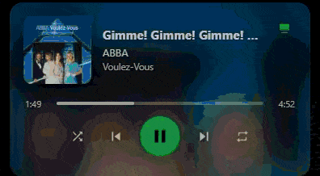
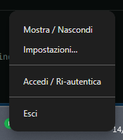
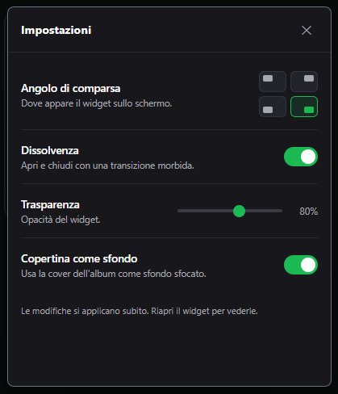

A tiny Spotify remote for Windows tray.
Click the tray icon and a "now playing" card pops up with controls, a seek bar and a device switcher — without opening the Spotify app.


Everything you need, nothing you don't.
Now Playing
Beautiful presentation of album art, title, artist, and album straight from your active device.
Playback Controls
Play, pause, skip, go back, shuffle, and repeat. Total control without opening the main app.
Smart Seek Bar
Clickable progress bar with smooth interpolation to easily skip to your favorite part of a song.
Volume Control
Adjust the volume or mute your active device instantly using the integrated slider.
Device Switcher
Seamlessly move playback between your PC, phone, or smart speakers (like Amazon Echo).
Secure & Native
Uses OAuth PKCE. Refresh token is encrypted with Windows DPAPI. Auto-hides natively.
A native feel.

Right-click tray menu

Extensive settings
⚠️ Before you start
- You need a Spotify Premium account.
- You must create your own free Spotify developer app to get a Client ID.
Quick Setup
Download and run
Get the installer from the Releases page. A green icon will appear in your tray.
Create a Spotify App
Go to the Spotify Developer Dashboard and create a new app. Set the Redirect URI to exactly: http://127.0.0.1:8888/callback and check "Web API".
Connect the Widget
Copy your Client ID from the Spotify dashboard. Click the tray icon, paste the ID, and click "Log in with Spotify".